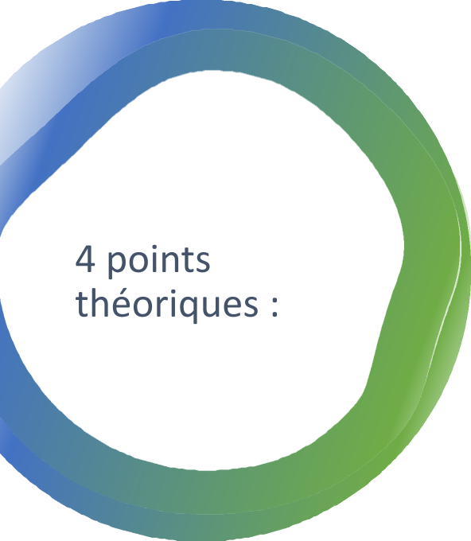
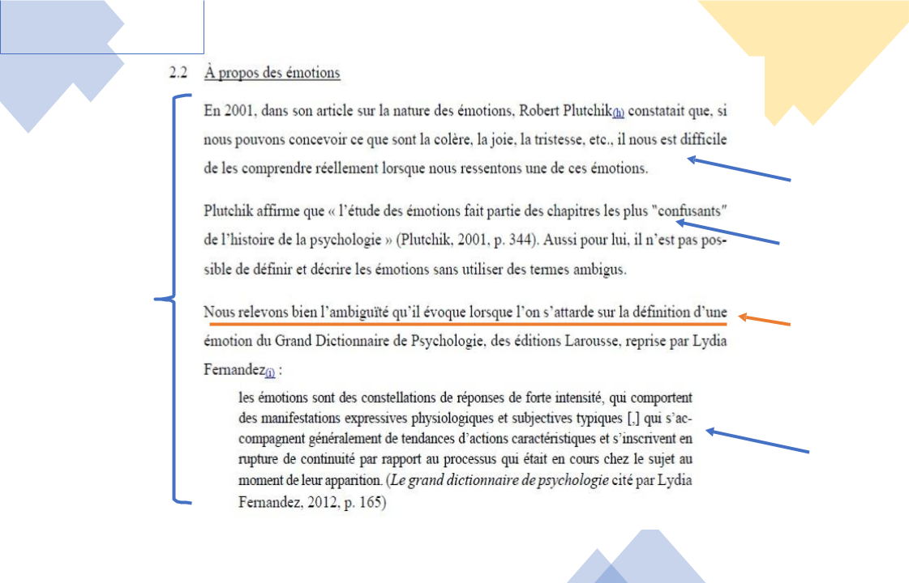
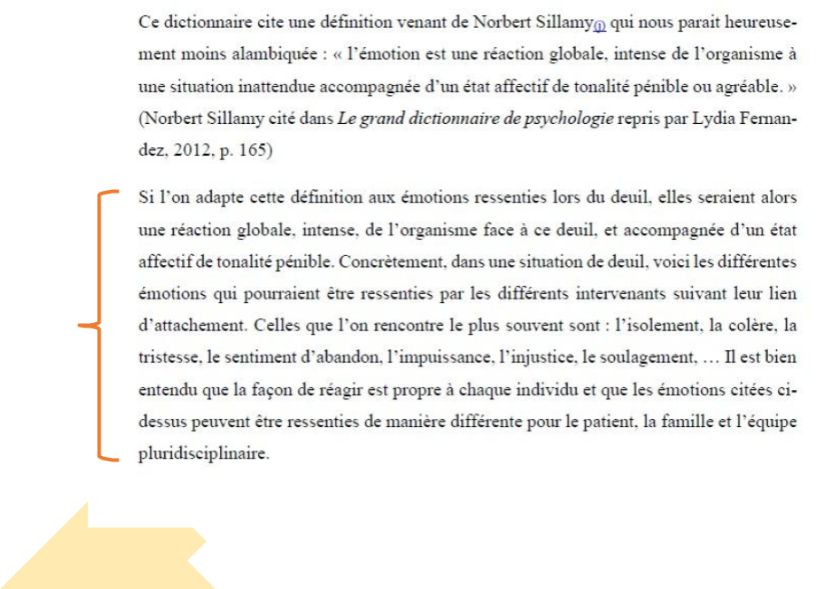
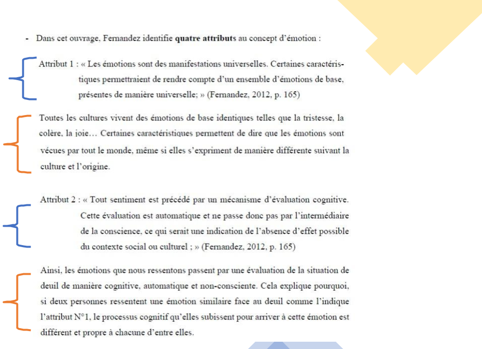
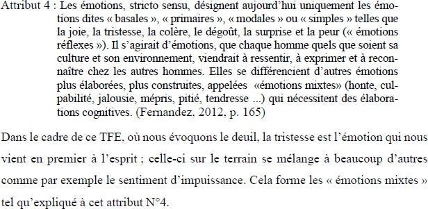
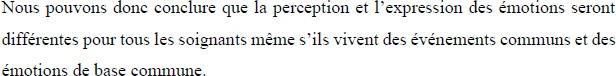

IQTF Méthode
Exploration d’un
concept
NB
- Possibilité de partir d’un seul concept à la base (concept émergeant du constat)
- qui va permettre d’en déduire un autre ou un sous-concept, ou plusieurs
- Pas toujours d’emblée minimum 2 concepts évidents qui émergent de la thématique
🡺 travail de réflexion et de déduction

- Définition : donner le sens d’un mot, d’un concept
- Attributs : ce qui permet de reconnaitre le concept, ses caractéristiques, ses signes, ses symptômes, … observables/physiques ou non
- Antécédents : ce qui est nécessaire préalablement pour que le concept puisse être mis en œuvre (AVANT), les prérequis, les compétences, les causes, les facteurs de risque, …
- Conséquences : ce qui se produit quand le concept a été mis en œuvre (APRES), les conséquences, les bénéfices, les
résultats, les buts à atteindre, …
- Utiliser les informations issues de diverses sources afin de construire cette conceptualisation
- Travail de sélection d’informations pertinentes + construction de l’analyse de concept en articulant ces différentes informations entre elles
- Ne pas chercher après UN article unique où se trouveraient toutes les réponses
Analyse conceptuelle dans le cadre de vos TFE
Comment réaliser et présenter l’analyse conceptuelle dans le cadre de votre TFE ?
- Théorie
- Commentaire
- Retour sur constat
- Lien avec ce qui suit
10
Théorie
(telle que développé dans les dias précédentes)
- consulter diverses ressources (probantes ou non)
- et développer les 4 points de l’analyse conceptuelle
🡪 définition, attributs, ATCD CSQ.
11
Commentaire
- commenter/expliquer/utiliser les
éléments théoriques sélectionnés
12
Retour sur constat
- faire le lien entre ce que vous développez de manière théorique et votre situation/problématique
- étoffer avec des éléments pratiques/du
terrain spécifiques à votre constat
13
Lien avec ce qui suit
- établir des liens logiques entre vos différentes parties de l’analyse, et du travail de manière générale
= fil conducteur
14
Atelier TFE
Analyse conceptuelle et cheminement de pensée
Exemple de TFE
TFE portant sur la gestion des émotions
Définition du concept « émotions »
Paraphrase
Purement théorique Développement de la définition selon différents auteurs
Citation
Phrase de liaison, fil conducteur

Citation

Commentaire
Ici sert à adapter la théorie au contexte du TFE

Attributs du concept « émotions »
Théorie
Commentaire
Théorie
Commentaire
Théorie
Retour sur constat Lien avec la situation de départ
Commentaire
20